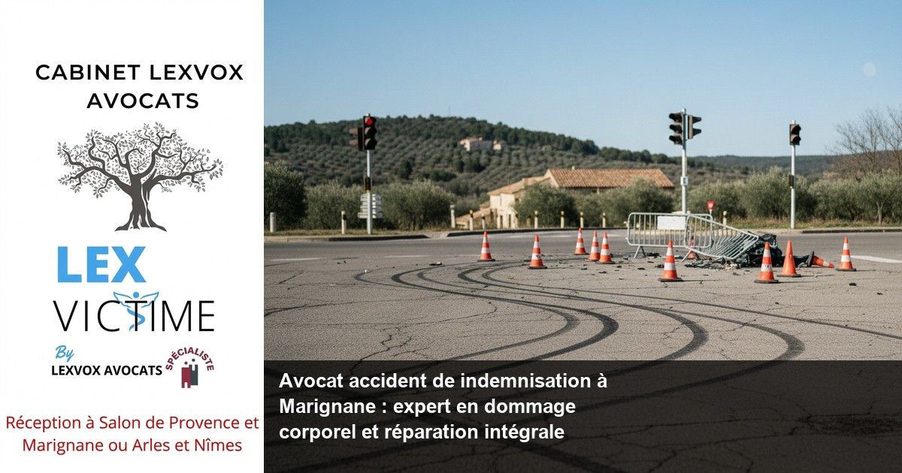

Accident de la route — Marignane
Avocat accident mortel de la route à Marignane : indemnisation des proches

— Par Me Patrice Humbert, avocat au barreau d'Aix-en-Provence
Suite à un accident de la route mortel, obtenir une indemnisation juste nécessite l'expertise d'un avocat spécialisé en dommage corporel. À Marignane, Me Patrice Humbert du Cabinet LEXVOX AVOCATS, premier avocat certifié IA de France avec plus de 20 ans d'expérience exclusive en dommage corporel, accompagne les familles dans cette épreuve. Consultation gratuite 30 minutes au 04 90 54 58 10.
Obtenir la meilleure indemnisation possible : indemnisation des victimes et droit du dommage corporel à Marignane
Le droit à l'indemnisation après un accident mortel
Lorsqu'un accident de la route provoque un décès à Marignane, notamment sur les axes dangereux comme l'A7 ou l'A55 desservant l'aéroport Marseille-Provence, les proches de la victime disposent de droits à indemnisation. Le droit du dommage corporel français garantit une réparation intégrale des préjudices subis par les ayants droit.
L'indemnisation des victimes d'accidents de la route mortels couvre plusieurs postes de préjudice : le préjudice économique (perte de revenus), le préjudice moral (souffrance endurée), les frais d'obsèques, et le préjudice d'accompagnement. Chaque préjudice doit être évalué précisément pour obtenir la meilleure indemnisation possible.
Les spécificités du dommage corporel à Marignane
La proximité de Marignane avec des axes de circulation dense et la zone industrielle génère malheureusement de nombreux accidents graves. Selon l'expérience du cabinet (20+ ans, centaines de dossiers), les accidents mortels sur l'A7 et l'A55 représentent des enjeux d'indemnisation majeurs, souvent complexifiés par la multiplicité des intervenants (assureurs, expertise médicale, médecin-conseil).
L'avocat spécialisé en indemnisation joue un rôle crucial dès les premiers jours suivant le drame. Il sécurise les preuves, coordonne l'expertise, et négocie avec les compagnies d'assurance pour défendre les droits des victimes.
L'importance de l'évaluation médicale
Même en cas d'accident mortel, l'expertise médicale reste fondamentale pour évaluer les circonstances du décès et les souffrances endurées. Le médecin-conseil de victimes, distinct du médecin-conseil de l'assurance, apporte son regard indépendant sur le dossage médical.
Cette expertise permet d'établir précisément les préjudices et d'obtenir une indemnisation intégrale. L'avocat expert coordonne ces démarches complexes, notamment avec les établissements de soins comme l'Hôpital Nord Marseille ou la Clinique de Vitrolles.
Accompagner par un avocat : un accident de la route et faire appel à un avocat à Marignane
Pourquoi faire appel à un avocat après un accident mortel
La perte d'un proche dans un accident de la route constitue un traumatisme majeur. Dans ce contexte douloureux, la présence d'un avocat expérimenté devient indispensable pour préserver vos droits et obtenir une réparation du dommage corporel adaptée.
L'assistance d'un avocat spécialisé permet d'éviter les pièges tendus par les compagnies d'assurance, qui cherchent souvent à minimiser leur indemnisation. Face aux compagnies d'assurance, l'accompagnement par un avocat garantit un rapport de force équilibré.
Le rôle de l'avocat dans la procédure d'indemnisation
Dès votre premier appel au 04 90 54 58 10, l'avocat de victimes analyse votre dossier et vous explique la procédure d'indemnisation. Il identifie tous les responsables de l'accident et leurs assureurs, condition essentielle pour une indemnisation complète.
L'avocat spécialisé en indemnisation coordonne également l'expertise médicale, négocie avec les assureurs, et peut saisir le tribunal judiciaire d'Aix-en-Provence si la négociation amiable échoue. Cette approche globale maximise vos chances d'obtenir une indemnisation juste.
L'accompagnement psychologique des familles
Au-delà des aspects juridiques, l'avocat de victimes comprend la dimension psychologique du deuil. Suite à un accident mortel, les familles traversent des phases de déni, colère, et acceptation qui influencent leur capacité à défendre leurs droits.
Le cabinet LEXVOX AVOCATS, fort de son expérience de plus de 20 ans, adapte son accompagnement à cette réalité humaine. La consultation gratuite de 30 minutes permet d'établir une relation de confiance indispensable dans cette épreuve.
Expert en indemnisation : défense des victimes et réparation intégrale à Marignane
L'expertise unique du cabinet LEXVOX
Me Patrice Humbert, premier avocat certifié IA de France, apporte une expertise technologique unique au service de la défense des victimes. Cette certification permet d'analyser plus rapidement les dossiers complexes et d'identifier tous les angles d'indemnisation possible.
Avec une spécialisation CNB en dommage corporel et 20 ans d'expérience exclusive, le cabinet maîtrise parfaitement les subtilités de l'indemnisation accident. Cette expertise se traduit par des indemnisations obtenues souvent supérieures aux premières propositions des assureurs.
La méthode d'évaluation des préjudices
L'évaluation précise des préjudices constitue le cœur de l'expertise en indemnisation. Dans un accident mortel, l'avocat expert doit quantifier des préjudices tant matériels qu'immatériels : perte de revenus futurs, préjudice moral des proches, frais divers.
Cette évaluation s'appuie sur des référentiels jurisprudentiels, notamment ceux développés par nos confrères à Paris et Bordeaux, et sur l'expertise du médecin-conseil de victimes. L'objectif : obtenir une réparation intégrale qui reflète réellement l'ampleur du préjudice subi.
L'innovation au service des victimes
La certification IA de Me Humbert permet d'optimiser l'analyse des dossiers d'indemnisation. Cette technologie aide à identifier des jurisprudences pertinentes, à calculer les préjudices avec précision, et à préparer des argumentaires solides face aux compagnies d'assurance.
Cette approche innovante, unique en France dans le domaine du dommage corporel, place le cabinet LEXVOX à la pointe de la défense des victimes d'accidents de la route.
Accident de la vie : avocat de victimes et avocat spécialisé à Marignane
Les accidents de la vie au-delà de la route
Bien que spécialisé dans les accidents de la route, le cabinet intervient également sur les autres accidents de la vie : accidents domestiques, accidents de sport, erreurs médicales. Les victimes d'erreurs médicales bénéficient d'une expertise particulière, notamment concernant la loi du 4 mars 2002 relative aux droits des malades et à la qualité du système de santé.
Ces accidents impliquent souvent les métiers de la santé et peuvent résulter d'une maladie infectieuse contractée lors d'un soin. L'indemnisation suit alors des procédures spécifiques, parfois devant l'ONIAM (Office National d'Indemnisation des Accidents Médicaux).
La spécificité de l'avocat de victimes
L'avocat de victimes se distingue de l'avocat généraliste par sa connaissance approfondie des mécanismes d'indemnisation et sa sensibilité aux traumatismes subis. Cette spécialisation permet une prise en charge globale, tenant compte des aspects juridiques, médicaux et psychologiques.
À Marignane, cette approche spécialisée prend tout son sens compte tenu de la diversité des accidents : circulation dense vers l'aéroport, activités industrielles, proximité de Marseille. Chaque type d'accident nécessite une expertise particulière que seul un avocat spécialisé peut apporter.
L'approche pluridisciplinaire
Le traitement d'un dossier de dommage corporel nécessite l'intervention de multiples professionnels : médecins, experts automobiles, économistes, psychologues. L'avocat spécialisé orchestre cette équipe pluridisciplinaire pour construire un dossier d'indemnisation solide.
Cette coordination est particulièrement importante dans les dossiers complexes impliquant plusieurs victimes ou responsables, fréquents sur les axes de circulation de Marignane.
Une indemnisation : assurance et expertise à Marignane
Le rôle des compagnies d'assurance
L'indemnisation d'un accident mortel implique généralement plusieurs assureurs : assurance du responsable, éventuellement assurance de la victime (garantie conducteur), et parfois des assurances complémentaires. Chaque compagnie d'assurance cherche naturellement à limiter sa prise en charge.
Face à cette multiplicité d'intervenants, seul un avocat expérimenté peut identifier tous les gisements d'indemnisation et optimiser la réparation globale. L'expertise développée sur Marignane, Aix-en-Provence, Salon-de-Provence et Arles permet cette approche globale.
L'expertise technique de l'accident
Au-delà de l'expertise médicale, l'expertise technique de l'accident permet d'établir les circonstances exactes et les responsabilités. Cette expertise influence directement l'indemnisation, notamment en cas de responsabilité partagée.
L'avocat veille à ce que cette expertise soit menée de manière contradictoire et que les intérêts de la victime soient préservés. Il peut contester les conclusions de l'expert si celles-ci semblent défavorables ou incomplètes.
Les délais de prescription
L'indemnisation d'un accident doit respecter certains délais de prescription. En droit civil, l'action en responsabilité se prescrit par 5 ans à compter de la manifestation du dommage. Cependant, des exceptions existent selon les circonstances.
Il est donc crucial de consulter rapidement un avocat pour préserver ses droits. La consultation gratuite proposée par le cabinet LEXVOX permet cette première approche sans engagement.
Préjudice et honoraire : votre avocat à Marignane
Les différents types de préjudices indemnisables
Dans un accident mortel, les préjudices indemnisables sont multiples. Le préjudice économique correspond à la perte de revenus que la victime aurait générés. Le préjudice moral indemnise la souffrance des proches. Des préjudices spécifiques (frais d'obsèques, préjudice d'accompagnement) complètent cette indemnisation.
L'avocat expert en indemnisation maîtrise la nomenclature Dintilhac qui classe ces différents postes de préjudice. Cette connaissance technique permet d'éviter tout oubli et d'optimiser l'indemnisation.
La tarification transparente du cabinet
Le cabinet LEXVOX pratique une tarification transparente : part fixe à partir de 700 EUR HT + 10-15% au résultat. Cette structure tarifaire, expliquée dès la consultation gratuite, permet aux familles de connaître précisément le coût de l'accompagnement juridique.
L'honoraire au résultat aligne les intérêts de l'avocat sur ceux de ses clients : plus l'indemnisation obtenue est importante, plus l'avocat est rémunéré. Cette approche garantit un engagement maximal dans la défense du dossier.
Le rapport coût/bénéfice de l'avocat
Selon l'expérience du cabinet (20+ ans, centaines de dossiers), l'intervention d'un avocat spécialisé permet généralement d'obtenir une indemnisation supérieure de 30 à 50% par rapport à une négociation directe avec l'assureur.
Cette plus-value justifie largement les honoraires d'avocat et permet aux familles d'obtenir la réparation intégrale à laquelle elles ont droit. L'avocat apporte également une sérénité précieuse dans cette période difficile.
Procédure d'indemnisation à Marignane : les étapes avec LEXVOX AVOCATS
Étape 1 : Premier contact et analyse du dossier
Dès votre appel au 04 90 54 58 10, l'équipe du cabinet LEXVOX organise une consultation gratuite de 30 minutes. Cette première rencontre permet d'analyser les circonstances de l'accident, d'identifier les responsabilités, et d'évaluer les enjeux d'indemnisation.
L'avocat vous explique alors la procédure d'indemnisation applicable à votre situation et les démarches nécessaires. Un devis précis vous est remis, respectant la structure tarifaire du cabinet (part fixe + pourcentage au résultat).
Étape 2 : Constitution du dossier et expertise
Une fois le mandat signé, l'avocat entreprend la constitution complète du dossier. Il rassemble tous les documents nécessaires : procès-verbal de police, certificats médicaux, justificatifs de revenus, témoignages.
Parallèlement, il organise l'expertise médicale avec un médecin-conseil de victimes indépendant. Cette expertise évalue précisément tous les préjudices subis et constitue la base de la demande d'indemnisation.
Étape 3 : Négociation avec les assureurs
Fort du dossier constitué, l'avocat engage les négociations avec les compagnies d'assurance concernées. Cette phase peut durer plusieurs mois et nécessite une connaissance approfondie des pratiques assurantielles.
L'objectif est d'obtenir une offre d'indemnisation satisfaisante par voie amiable, évitant ainsi les délais et coûts d'une procédure judiciaire. L'expérience du cabinet permet souvent d'aboutir à un accord amiable favorable.
Étape 4 : Procédure judiciaire si nécessaire
Si la négociation amiable échoue, l'avocat peut saisir le tribunal judiciaire d'Aix-en-Provence. Cette procédure, plus longue, permet souvent d'obtenir une indemnisation supérieure aux propositions initiales des assureurs.
Le cabinet LEXVOX maîtrise parfaitement ces procédures judiciaires et n'hésite pas à les engager quand l'intérêt de ses clients l'exige.
Étape 5 : Versement de l'indemnisation

Vos questions sur avocat accident de indemnisation à marignane : expert en dom
Quels sont mes droits après le décès d'un proche dans un accident de la route ?
Après un accident mortel, les ayants droit (conjoint, enfants, parents) disposent de droits à indemnisation. Ces droits couvrent les préjudices économiques (perte de revenus), moraux (souffrance), et matériels (frais divers). L'indemnisation dépend du lien avec la victime et de l'impact de sa disparition sur votre situation. Un avocat spécialisé peut évaluer précisément vos droits lors d'une consultation gratuite.
Combien de temps faut-il pour obtenir une indemnisation ?
Les délais d'indemnisation varient selon la complexité du dossier et la coopération des assureurs. En moyenne, une indemnisation amiable prend 12 à 18 mois, tandis qu'une procédure judiciaire peut durer 2 à 3 ans. Cependant, des provisions peuvent être obtenues plus rapidement pour couvrir les besoins urgents. L'avocat peut également demander des mesures d'urgence au tribunal si nécessaire.
L'assurance peut-elle refuser de m'indemniser ?
L'assurance du responsable ne peut refuser d'indemniser si la responsabilité de son assuré est établie. Cependant, elle peut contester l'étendue des préjudices ou proposer une indemnisation insuffisante. En cas de refus abusif, l'avocat peut saisir le tribunal compétent. Il est important de ne jamais accepter une première offre sans conseil juridique.
Que faire si l'accident implique plusieurs responsables ?
En cas de responsabilités multiples, chaque assureur indemnise proportionnellement à la faute de son assuré. L'avocat identifie tous les responsables et leurs assureurs pour optimiser l'indemnisation globale. Il peut également activer des garanties spécifiques (garantie conducteur, assurance accident de la vie) pour compléter l'indemnisation principale.
Les frais d'avocat sont-ils pris en charge ?
Les honoraires d'avocat ne sont généralement pas pris en charge par l'assurance adverse, sauf disposition contraire du contrat. Cependant, le surcoût généré par l'intervention de l'avocat est largement compensé par l'amélioration de l'indemnisation obtenue. Le cabinet propose également un paiement différé sur l'indemnisation pour faciliter l'accès au conseil juridique.
Puis-je changer d'avocat en cours de procédure ?
Vous pouvez librement changer d'avocat en cours de procédure en respectant les règles de substitution. Cependant, ce changement peut générer des frais supplémentaires et retarder le dossier. Il est donc important de bien choisir son avocat dès le départ. La consultation gratuite du cabinet LEXVOX permet d'évaluer la qualité de l'accompagnement proposé avant tout engagement.
Synthèse : votre droit à la réparation intégrale ?
Le droit du dommage corporel français garantit à chaque victime d'un accident le droit à une réparation intégrale de ses préjudices. L'indemnisation préjudice corporel nécessite l'expertise d'un avocat spécialiste qui maîtrise les subtilités de cette matière complexe. Suite à un accident, notamment mortel, faire appel à un avocat devient indispensable pour défendre efficacement les droits des victimes. L'avocat spécialisé en indemnisation évalue chaque poste de préjudice pour obtenir une indemnisation intégrale, incluant l'arrêt de travail des proches et tous les préjudices connexes. La réparation du dommage corporel requiert un accompagnement par un avocat expérimenté qui connaît les droits des victimes et sait les faire valoir face aux compagnies d'assurance. L'avocat expert en réparation du préjudice corporel analyse les circonstances de l'accident, coordonne l'expertise avec le médecin-conseil de victimes, et négocie sur chaque poste de préjudice pour obtenir la meilleure indemnisation. Une indemnisation juste ne s'improvise pas : les indemnisations concernant les accidents de la vie nécessitent souvent une indemnisation complémentaire que seules les victimes d'accidents de la route accompagnées peuvent obtenir. La présence d'un avocat lors de la procédure d'indemnisation garantit l'assistance d'un avocat expert qui défend les victimes d'accidents avec détermination. L'indemnisation d'un accident implique que les victimes d'accidents comprennent qu'un accident peut générer des préjudices complexes, nécessitant d'identifier précisément le responsable de l'accident et sa compagnie d'assurance. La défense des victimes d'accidents constitue le cœur du métier d'avocat de victimes, particulièrement pour les victimes d'accident confrontées aux circonstances tragiques de l'accident. Dans tous les cas d'accident, la procédure d'indemnisation exige une expertise juridique que seules les victimes d'accident accompagnées peuvent espérer valoriser pleinement.
Procédure d'indemnisation à Marignane : les étapes avec LEXVOX ?
La procédure d'indemnisation suivie par le cabinet LEXVOX AVOCATS à Marignane respecte une méthodologie éprouvée sur plus de 20 ans d'expérience. Dès le premier contact au 04 90 54 58 10, l'avocat analyse votre dossier lors d'une consultation gratuite de 30 minutes. Cette première étape permet d'identifier tous les responsables potentiels et leurs assurances. L'étape de constitution du dossier mobilise toute l'expertise du cabinet : rassemblement des pièces, coordination avec les professionnels de santé, organisation de l'expertise médicale contradictoire. L'avocat veille à préserver tous vos droits et à documenter précisément l'ensemble de vos préjudices. La phase de négociation avec les assureurs constitue le cœur de la procédure d'indemnisation. Fort de son expérience et de sa certification IA unique en France, Me Patrice Humbert optimise chaque négociation pour obtenir la meilleure indemnisation possible. Si nécessaire, il n'hésite pas à saisir le tribunal judiciaire d'Aix-en-Provence pour faire valoir vos droits. L'accompagnement se poursuit jusqu'au versement effectif de votre indemnisation, avec un contrôle rigoureux des calculs et des délais de paiement. **Comment se déroule la première consultation ?** La première consultation de 30 minutes est entièrement gratuite et sans engagement. Elle permet d'analyser votre situation, d'évaluer les enjeux d'indemnisation, et de vous expliquer la procédure applicable. Vous pouvez prendre rendez-vous au 04 90 54 58 10 ou par email à contact@avocat-lexvox.com. **Quels documents dois-je apporter ?** Apportez tous les documents liés à l'accident : procès-verbal de police, constats, certificats médicaux, justificatifs de revenus de la victime, factures diverses. L'avocat vous guidera pour compléter ce dossier initial. **Comment sont calculés les honoraires ?** Le cabinet pratique une tarification transparente : part fixe à partir de 700 EUR HT + 10-15% sur l'indemnisation obtenue. Ce système aligne les intérêts de l'avocat sur les vôtres et garantit un engagement maximal. **Puis-je bénéficier d'une aide juridictionnelle ?** Selon vos revenus, vous pouvez éventuellement bénéficier d'une aide juridictionnelle partielle ou totale. L'avocat vous renseigne sur ces dispositifs lors de la consultation gratuite. **Combien de temps dure une procédure d'indemnisation ?** Les délais varient selon la complexité : 12 à 18 mois pour un règlement amiable, 2 à 3 ans en cas de procédure judiciaire. Des provisions peuvent être demandées pour couvrir les besoins urgents. **Le cabinet intervient-il sur tout le département ?** Le cabinet LEXVOX dispose de 4 bureaux : Aix-en-Provence, Salon-de-Provence, Arles et Marignane. Cette implantation territoriale permet un accompagnement de proximité sur l'ensemble des Bouches-du-Rhône et au-delà. --- **Vous êtes victime d'un accident de la route mortel dans votre famille ? Ne restez pas seul face à cette épreuve.** Le Cabinet LEXVOX AVOCATS, premier cabinet certifié IA en dommage corporel, met à votre service plus de 20 ans d'expertise exclusive pour défendre vos droits à l'indemnisation. **Consultation gratuite 30 minutes - Tel : 04 90 54 58 10** **Email : contact@avocat-lexvox.com** **Bureau de Marignane - Également présent à Aix-en-Provence, Salon-de-Provence et Arles** *Votre réparation intégrale est notre engagement. Contactez-nous dès maintenant.*
Première consultation gratuite — 30 min
Besoin d'un avocat spécialisé à Marignane ? Nous évaluons votre dossier gratuitement et vous indiquons vos droits à réparation.
Cabinet LEXVOX AVOCATS — Me Patrice Humbert — Spécialisation CNB dommage corporel — Bureaux à Aix-en-Provence, Salon-de-Provence, Arles et Marignane